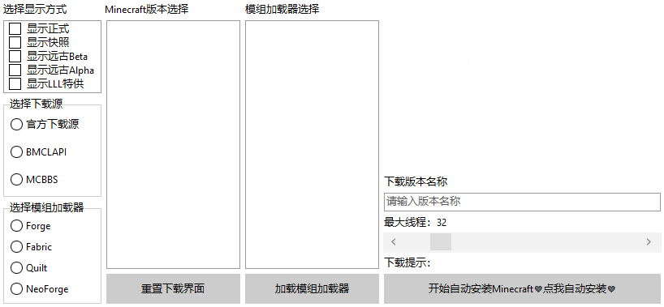

本章节我们将继续学习制作MC启动器！
本章将教会大家获取mc的元数据并将版本和下载链接解析到列表框中。
首先，还是老样子，我们先写一份UI窗口吧！
在我们的主界面窗口上创建这么一个打开下载窗口的控件：

是的，你没看错，启动器下载窗口就是这么简单！
首先让我介绍一下左边的空间吧！
首先，左边第一个控件是一个checkboxlist，意思就是复选框列表，我们可以通过： CheckboxList.Checked[<数字>]来获取到一个boolean值，然后获取到该复选框是否被选中了。
这里面有一个LLL特供，这个的意思是供玩家搜集一些MC原版meta无法取得的版本，例如生存测试等。同时，这个地方大家也可以自制一个收藏夹的！这里我就不多赘述了，大家自己去尝试一下吧！【我们在下方写的代码，都是按照这里的CheckListBox只有4个值来定的，我懒得改文档结构了。。】
其次，我们再来看看下面两个框，其实就是一个GroupBox + RadioButton啦！我们完全可以使用这几个来判断选中的下载源是什么，以及选用的模组加载器是什么。
然后嘛，我们的右侧就是我们的Minecraft版本选择啦，这里我们在进入窗口的第一次，我们就得要获取到所有的Minecraft版本，我们会根据这个选中的值来进行下载。
再接着，我们的重置下载界面，这个是用于重新Get一次我们的MC元数据，然后接着下载。类似于PCL2的下载部分左侧的Minecraft一个螺旋按钮，用于重置MC元数据。
再接着，就是我们的下载版本名称了，众所周知，任何一个启动器都是可以自定义下载名称的，我们可以为我们每一个下载的版本定义一个美美的名称。
再接着，就是我们的最大线程了，这里我们使用的是一个ScrollBar滑动条控件，这意味着我们可以直接拖动滑动条来设定最大线程噢！我们滑动条滑动的时候，上方的Label也会变的噢！
再接着，就是我们的下载提示。但其实这个Label框本来也就一点用处也没有，因为我们晚点会设置一个DonwloadProgressForm，专门用于存放我们的下载须知部分。
最后一个，就是我们的开始安装了！点击这个按钮，就会自动从左边推断出所需要下载的版本，随后就可以直接开始下载安装，完全不必管它了！
那好的，我们首先在我们的type里新建一个initDownload过程，这个过程用于初始化我们的下载部分。我们首先先来看看里面应该怎么写吧！
【具体如何创建initDownload函数，我就不写了，大家可以看看前面的章节。】【不仅如此，我也不打算写如何在主窗口中显示这个下载窗口的代码了，大家自己用自己的语言写就好了！】
我们首先先看看以下代码：
procedure Form3.initDownload();
begin
try //判断单选框和复选框
tsd := strtoint(LLLini.ReadString('Version', 'SelectDownloadSource', '')); //这里有个tsd变量，这个变量我们会设定成全局变量的。大家就自己声明了！
//在别的语言中声明全局变量，就写个public int tsd = 0;就好了！【Java举例】
if tsd = 1 then begin //我们在上方读取了配置文件，这里我们判断配置文件中的值是否为1，如果为1，则写1。
//以下全部都是全局变量，在implementation顶上的var下面写上名字: 类型即可。类型全部都是String。
//具体以下值为什么意思，晚点再说！
mcwe := 'https://piston-meta.mojang.com';
forwe := 'https://maven.minecraftforge.net';
fabwe := 'https://maven.fabricmc.net';
quiwe := 'https://maven.quiltmc.org/repository/release';
forme := 'https://maven.minecraftforge.net';
fabme := 'https://meta.fabricmc.net';
quime := 'https://meta.quiltmc.org';
neome := 'https://maven.neoforged.net/releases';
radiogroup1.ItemIndex := 0; //这里直接将源的选择设置成0，也就是目前第1个官方源元素被选中了。
end else if tsd = 2 then begin
mcwe := 'https://bmclapi2.bangbang93.com';
forwe := 'https://bmclapi2.bangbang93.com/maven';
fabwe := 'https://bmclapi2.bangbang93.com/maven';
quiwe := 'https://maven.quiltmc.org/repository/release';
forme := 'https://bmclapi2.bangbang93.com/maven';
fabme := 'https://bmclapi2.bangbang93.com/fabric-meta';
quime := 'https://meta.quiltmc.org';
neome := 'https://bmclapi2.bangbang93.com/maven';
radiogroup1.ItemIndex := 1; //这里是1，也就是第二个BMCLAPI源
end else if tsd = 3 then begin
mcwe := 'https://download.mcbbs.net';
forwe := 'https://download.mcbbs.net/maven';
fabwe := 'https://download.mcbbs.net/maven';
quiwe := 'https://maven.quiltmc.org/repository/release';
forme := 'https://download.mcbbs.net/maven';
fabme := 'https://download.mcbbs.net/fabric-meta';
quime := 'https://meta.quiltmc.org';
neome := 'https://download.mcbbs.net/maven';
radiogroup1.ItemIndex := 2; //MCBBS源
end else raise Exception.Create('Format Exception');
except //这里设置默认值，如果第一个strtoint无法解析的话，就在这里写默认。
tsd := 1; //默认的tsd是1。以下全部都默认是官方源。
mcwe := 'https://piston-meta.mojang.com';
forwe := 'https://maven.minecraftforge.net';
fabwe := 'https://maven.fabricmc.net';
quiwe := 'https://maven.quiltmc.org/repository/release';
forme := 'https://maven.minecraftforge.net';
fabme := 'https://meta.fabricmc.net';
quime := 'https://meta.quiltmc.org';
neome := 'https://maven.neoforged.net/releases';
LLLini.WriteString('Version', 'SelectDownloadSource', '1');
radiogroup1.ItemIndex := 0;
end;
try //这里我们将配置文件中的ShowRelease一直到ShowAlpha给选中了，意思就是配置文件中如果为True的话，则选中这个CheckListBox元素。
//这里可能对于新手不是很理解，为什么在Delphi中的CheckListBox是这么选的呢？点上一个Checked，然后选择元素后再赋值bool值呢？
//我也不知道，大家就这么看就好嘛……能选就好！
//这里的tsr、tss、tsb、tsa都是全局变量！
tsr := strtobool(LLLini.ReadString('Version', 'ShowRelease', ''));
checklistbox.Checked[0] := tsr;
except
tsr := True;
LLLini.WriteString('Version', 'ShowRelease', 'True');
checklistbox.Checked[0] := True;
end;
try
tss := strtobool(LLLini.ReadString('Version', 'ShowSnapshot', ''));
checklistbox.Checked[1] := tss;
except
tss := False;
LLLini.WriteString('Version', 'ShowSnapshot', 'False');
checklistbox.Checked[1] := False;
end;
try
tsb := strtobool(LLLini.ReadString('Version', 'ShowOldBeta', ''));
checklistbox.Checked[2] := tsb;
except
tsb := False;
LLLini.WriteString('Version', 'ShowOldBeta', 'False');
checklistbox.Checked[2] := False;
end;
try
tsa := strtobool(LLLini.ReadString('Version', 'ShowOldAlpha', ''));
checklistbox.Checked[3] := tsa;
except
tsa := False;
LLLini.WriteString('Version', 'ShowOldAlpha', 'False');
checklistbox.Checked[3] := False;
end; //这里我们没有为LLL特供提供一个选中，这个特供其实就是将下载网址导入进启动器制作者们自己制作的网址中，大家可以自行选择是否需要。
TTask.Run(procedure begin //这个函数之前你们一定见过，这里只是启动一个线程来对网络进行获取。
webjson := GetWebText(Concat(mcwe, '/mc/game/version_manifest.json'));//这个函数是根据填入的网址对网络Get获取的返回文本。
//上述的webjson也是一个全局变量噢！
SoluteMC(tsr, tss, tsb, tsa); //解决MC版本（为列表框内加上MC的全版本。） 这里是一个自定义函数，稍后会给各位详解！
end);
end;
截至目前，BMCLAPI已经正式对NeoForge提供支持了！具体添加时间是【2023.8.22】。而本篇教程始撰写日为2023.10.1。【ps：看我咕了多久……】不过放心吧！将来BMCLAPI引入Quilt之后，我会再来更新这一章的！
首先，我们在程序一旦点击了下载部分窗口的时候，立刻初始化了一次MC版本。而且我们也只是仅仅只是Get了一次MC版本罢了。
我们仅仅只是为玩家进入该下载部分时Get一次MC原版的meta文件，并未对其进行任何的文件输出等。大家也可以通过保存外部文件的方式达到保存用户的输入数据什么之类的。
那么这里的初始化下载部分就说这么多，然后重置下载部分那一点代码就交给各位自行实现了吧！这里不再赘述了。
下面我要说的是SoluteMC这一部分的代码，其实这里面有4个参数，但是这4个参数为我以前写代码时的高度耦合代码，现在完全不需要了【因为有了全局变量。】那既然有了全局变量，而我这里也已经这么写了……还能怎么硕呢？将就着看吧……
首先我们需要先去看看MC官方的网址JSON获取结构是什么！我们点开这个网址
这里面是官方的MC获取JSON的结构，我们看到有latest代码块，里面有个release和snapshot。但是我们目前暂时不需要这个对象，我们往下看，下面还有一个列表！
这个被称为【versions】的列表里，有着所有的MC版本，其中还有发布时间等。
我们来看看结构如何：
{
"latest": {
"release": "1.20.2",
"snapshot": "1.20.2"
},
"versions": [
{
"id": "1.20.2",
"type": "release",
"url": "https://piston-meta.mojang.com/v1/packages/b994a7ad16326530c7a67e1b700fcd6fb86e1497/1.20.2.json",
"time": "2023-09-21T15:00:12+00:00",
"releaseTime": "2023-09-20T09:02:57+00:00"
}
...一堆别的东西……
]
}
其中，我们需要遍历versions下的所有代码块，提取出里面的id与url键，如果还想增加版本分类，还可以提取出release键。如果想知道发布时间，我们还需要提取出releaseTime键。
大概思路就是这样！我们直接开始写吧！
procedure SoluteMC(rel, snap, beta, alpha: String);
begin
ListBox1.Items.Clear; //清空列表框信息。
urlsl.Clear; //urlsl也是一个全局变量，是一个TStringList类型的。用于存放所有的下载地址。
if webjson = '' then begin //如果webjson为空，则直接失败。
ListBox1.Items.Add('MC导入失败，请重试。'); //为列表框内增加失败。
exit; //退出方法
end;
var Rt := TJsonObject.ParseJSONValue(webjson) as TJsonObject; //将webjson解析成json。
var JArr := (Rt.GetValue('versions') as TJsonArray); //获取versions下的所有元素
ListBox1.Items.BeginUpdate; //开始为列表框内添加元素。
for var I := 0 to JArr.Count - 1 do begin //以下皆为判断版本
var JTmp := JArr[I].GetValue<String>('type'); //直接获取type键。
if rel and (JTmp = 'release') //如果rel选中了，并且type为release，则执行一次以下。
or snap and (JTmp = 'snapshot') //以下同感！
or beta and (JTmp = 'old_beta')
or alpha and (JTmp = 'old_alpha')
then begin
ListBox1.Items.Add(JArr[I].GetValue<String>('id')); //为列表框内添加id键。
urlsl.Add(JArr[I].GetValue<String>('url')); //为下载地址列表添加url键。
end;
end;
ListBox1.Items.EndUpdate;
end;
至此，本篇结束！
其实，所有的函数如何调用，都是得通过开发者自己设定的！如此，列表框内已经能够成功显示了！
大家一定要仔细的看文中是否出现过【全局变量】几个字，如果出现了，则证明这个是一个全局变量。全局变量的意思各位用自己的编程语言也是一定可以实现的！这里就不多赘述了！